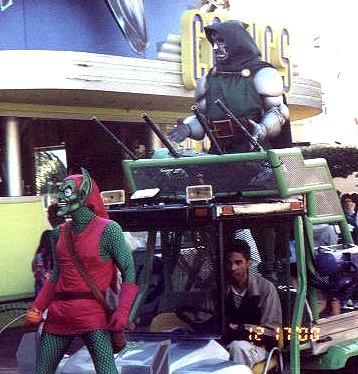

Islands of Adventure park which has a large section with a Marvel comics theme.
Heroes on parade - on 4 wheelers.

A very goofy-looking Captain America leading the pack.
Storm. I believe RuPaul was filling in this particular day.

Dr. Doom and the Green Goblin riding the dune-buggy of terror.
Close-up of Dr. Doom. Is he smiling?!
The wife and I meet Spiderman, at her insistence no less.
I tried to get my picture with Rogue and Storm, but the
fanboy line was too long and scary.
Christopher Reeves' cape from Superman 1.
I believe this was from MGM Studios.